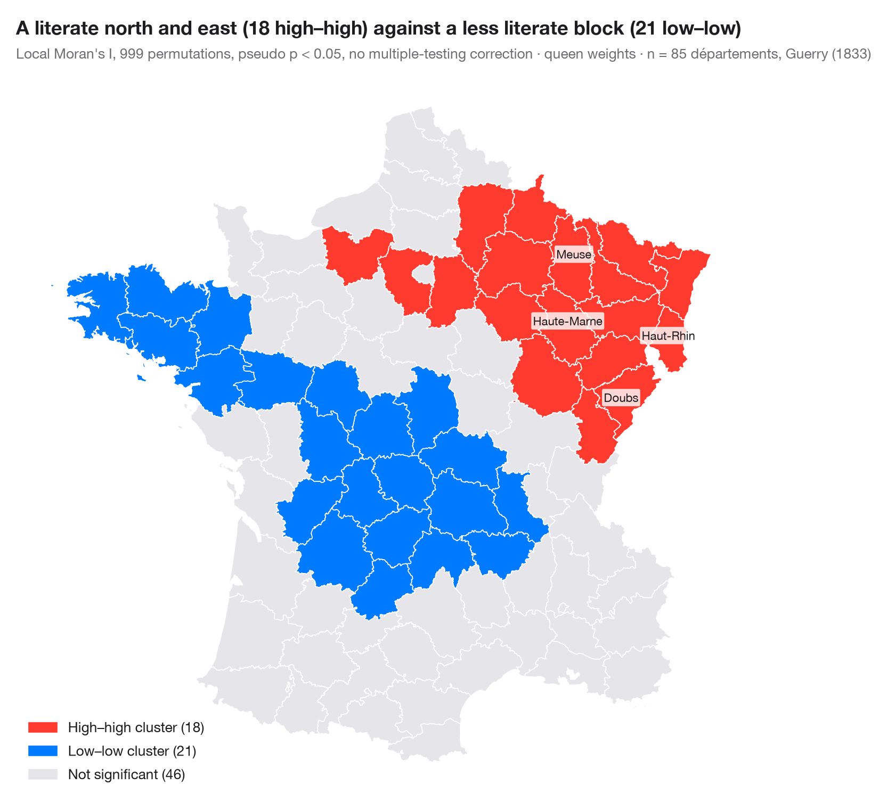

LISA 聚类地图（局部自相关）
聚类和空间异常值在哪里——每个地区的局部莫兰 I，并标出其置换显著性。

全局统计量说明地图是否存在聚集；局部空间关联指标（LISA；Anselin, 1995）说明聚集在哪里。局部莫兰 I 根据每个地区自身的数值及其邻居的数值计算。局部统计量显著的地区（伪 p < 0.05，999 次条件置换）按莫兰散点图的象限着色：高–高与低–低聚类，高–低或低–高空间异常值。其余地区为灰色。
每张 LISA 地图都伴随两点提醒。85 次检验并不独立，也未做多重比较校正，因此仅凭偶然也会出现若干显著地区；而且显著地区标示的是聚类的核心，聚类通常会延伸到其邻居。数据为盖里（1833 年）85 个省的识字率，用 libpysal 加载；统计量来自 esda.Moran_Local，地图用 GeoPandas 绘制。
代码及图中文字均为英文。
import geopandas as gpd
import matplotlib.pyplot as plt
import numpy as np
from esda.moran import Moran_Local
from libpysal import examples, weights
from matplotlib.patches import Patch
# Data: literacy of military conscripts in 85 départements, c. 1830 (Guerry, 1833)
g = gpd.read_file(examples.load_example("Guerry").get_path("guerry.shp"))
y = g["Litercy"].to_numpy(dtype=float)
w = weights.Queen.from_dataframe(g, use_index=False)
w.transform = "r"
lisa = Moran_Local(y, w, permutations=999, seed=1)
# Quadrants: 1 high–high, 2 low–high, 3 low–low, 4 high–low; grey if not significant
labels = {1: "High–high cluster", 3: "Low–low cluster", 2: "Low–high outlier", 4: "High–low outlier"}
colors = {1: "#FF3B30", 3: "#007AFF", 2: "#9FCBFF", 4: "#FFA8A2"}
sig = lisa.p_sim < 0.05
g["cluster"] = np.where(sig, lisa.q, 0)
counts = {k: int((g["cluster"] == k).sum()) for k in labels}
fig, ax = plt.subplots(figsize=(8, 7.4))
g.plot(color=[colors.get(c, "#E5E5EA") for c in g["cluster"]], edgecolor="white", linewidth=0.6, ax=ax)
handles = [Patch(color=colors[k], label=f"{labels[k]} ({counts[k]})") for k in labels if counts[k]]
handles.append(Patch(color="#E5E5EA", label=f"Not significant ({int((~sig).sum())})"))
ax.legend(handles=handles, loc="lower left", fontsize=9.5)
ax.set_axis_off()
# Name the strongest cluster cores
for _, r in g.assign(p=lisa.p_sim, Is=lisa.Is)[sig].nlargest(4, "Is").iterrows():
c = r.geometry.representative_point()
ax.annotate(r["Dprtmnt"], (c.x, c.y), fontsize=8, ha="center", color="#1D1D1F",
bbox=dict(boxstyle="round,pad=0.15", fc="white", ec="none", alpha=0.8))
north = g.centroid.y[g["cluster"] == 1].mean() > g.centroid.y[g["cluster"] == 3].mean()
where = "north and east" if north else "south"
ax.set_title(f"A literate {where} ({counts[1]} high–high) against a less literate "
f"block ({counts[3]} low–low)", pad=26)
ax.text(0, 1.02, f"Local Moran's I, 999 permutations, pseudo p < 0.05, no multiple-testing correction · "
f"queen weights · n = {w.n} départements, Guerry (1833)",
transform=ax.transAxes, fontsize=9.5, color="#6E6E73")
plt.show()
图表使用了可选的 PyStatlas 样式：添加 plt.style.use("pystatlas.mplstyle") 即可完全还原其外观。
数据来源
- Guerry's moral statistics of France, c. 1830 (85 départements). Guerry, A.-M. (1833). Essai sur la statistique morale de la France. Crochard. Data as compiled in Friendly, M. (2007). A.-M. Guerry's moral statistics of France: Challenges for multivariable spatial analysis. Statistical Science, 22(3), 368–399. https://doi.org/10.1214/07-STS241
Prepared by the Center for Spatial Data Science (University of Chicago) from the R package Guerry (Friendly and Dray), provided “as is”. Fetched once and cached by libpysal (examples.load_example("Guerry")). Variables come from Guerry's tables as translated by Whitt and Reinking (2002).
这些示例用于说明统计方法。图表标题描述的是该图在这些特定数据中呈现的内容——这些数据往往样本较小、年代较早或并不完整——而不是作者对实质问题的立场。关于解释、背景和数据质量，请以此处引用的原始来源为准。
如何引用
PyStatlas 由 Thierry Warin 创建并维护。如果它对你的工作有所帮助，敬请引用。
Warin, T. (2026). LISA cluster map (local autocorrelation). In PyStatlas: A Python Gallery of Statistical Graphics for the Social Sciences. https://warint.github.io/pystatlas/spatial-data/lisa-cluster-map/
@misc{warin2026statlas,
author = {Warin, Thierry},
title = {PyStatlas: A Python Gallery of Statistical Graphics for the Social Sciences},
year = {2026},
howpublished = {\url{https://warint.github.io/pystatlas/}},
note = {Source code: https://github.com/warint/pystatlas}
}